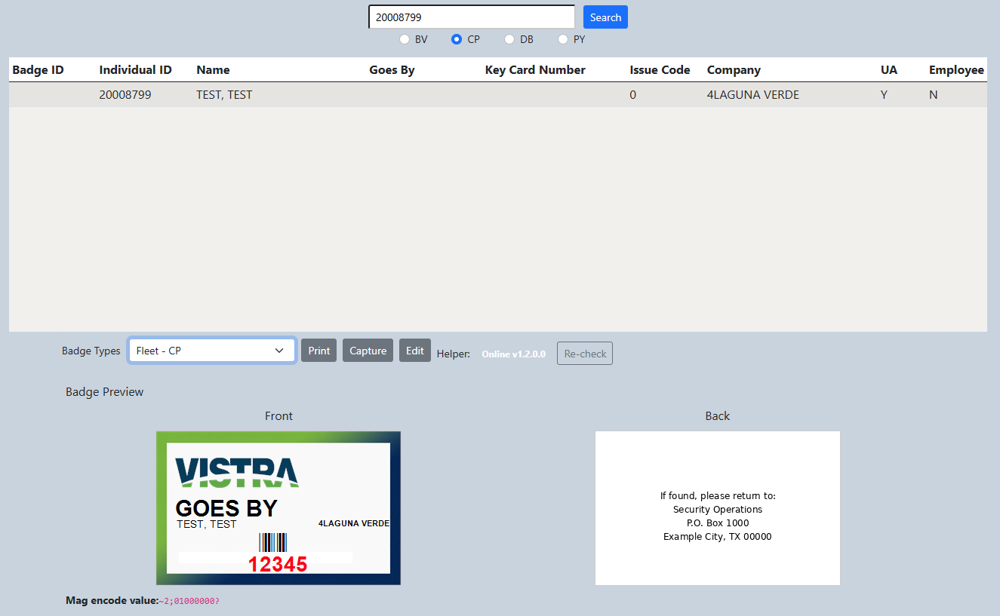

Enterprise Badging Platform
Designed and developed a production application that brought personnel information, access data, photography, badge hardware, printing, and local workstation services into one integrated operational workflow.
The Challenge
Badge issuance required personnel and authorization information from enterprise systems while also interacting with local workstation hardware and printing services.
Fragmented Workflow
Users needed information from multiple sources while performing a physical badging process, creating unnecessary context switching and opportunities for manual error.
Vendor Dependency
A commercial solution was available, but implementing it would have introduced additional cost and dependency for functionality that could be delivered internally.
Hardware Integration
The solution needed to work beyond the browser by interacting with local printers, badge-related hardware, photography, and workstation services.
Production Reliability
Because the application supports an operational business process, availability, validation, security, maintainability, and clear user feedback were all essential.
The Solution
I designed the application as a web-based front end backed by enterprise data and complemented by a local workstation service for functionality the browser could not safely perform directly.
High-Level Architecture
What I Built
I owned the application across the stack rather than implementing only one isolated component.
- Application architecture and technical design
- ASP.NET Core MVC backend development
- Vue 3 user interface development
- Oracle data access and validation
- Personnel search and selection workflows
- Role-based authentication and authorization
- Badge and hardware data handling
- Printer discovery and selection
- Photography integration
- Local workstation service integration
- Health monitoring and service-status feedback
- Deployment, troubleshooting and production support
Technical Challenges
The interesting part of the project was not simply creating another CRUD application. The system had to bridge enterprise web technologies with a physical workstation workflow.
Bridging Browser and Workstation Capabilities
Browser security prevents direct access to many local resources. A local service provided a controlled interface between the web application and workstation-specific functionality.
Coordinating Multiple Data Sources
Personnel, authorization, company, badge and location information had to be presented as one coherent workflow while preserving data integrity across system boundaries.
Operational Visibility
The application exposes local service health and availability so users can distinguish workstation connectivity issues from application or enterprise-system problems.
Supporting Real Production Work
Validation, error handling, role-based access, device selection, persistent workstation preferences and clear user feedback were designed around day-to-day operational use rather than a prototype.
Business Impact
The resulting application provided an internally controlled production solution while avoiding the cost and dependency associated with purchasing the proposed external solution.
Application Preview
Production screenshots and operational data are not published publicly.

Portfolio note: The interface shown above uses sanitized, fictional data to demonstrate the application without exposing production or operational information.
Back to the Portfolio
View additional examples of enterprise applications, integration, automation and data solutions.